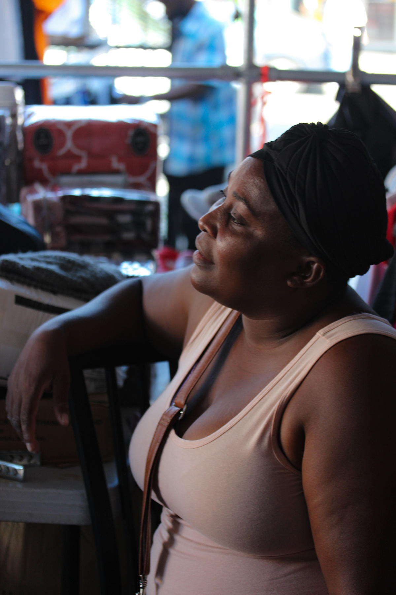
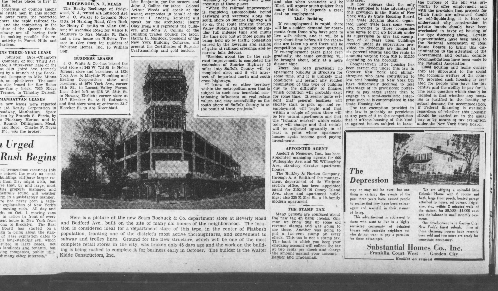

The invisible side of American retail in a Brooklyn parking lot


Mylla Bernard strolls among circular clothing racks, arranging a pair of Ralph Lauren jeans and an Izod suit pant.
A hangtag dangles off a floral skirt expressing appreciation like a letter:
“Thank You. We hope you are satisfied with your purchase. We will gladly assist with an exchange or return with this tag attached. Thank you! —Macy’s.”
The skirt, however, resides not at Macy’s on 34th Street nor any other department store; the skirt hangs alongside countless garments at Mylla’s tarped stall nestled in the parking lot on Church Avenue in Flatbush. Like many other Haitian immigrants, Mylla depends on the wastefulness of the American retail sector for her livelihood.
The skirt was likely conceived in Midtown cubicles, cut and sewn overseas, and eventually consigned to the back of a poorly lit department store in the U.S.
The skirt’s other tag conveys the item’s continued loss of value from the “ORIG 10900” peeking out from underneath a pile of blue markdown stickers; the sticker on top reads, “LAST ACT! ORIG 10900 SAVE 86% FINAL 1496.”
When the final sale price did not encourage customers, the garment was disposed of along with many others by means of shrink-wrapped pallet at auction via Macy’s Liquidation Department. Mylla was the bidder that won.
She spends her days reselling these unworn products side by side with several other vendors in the parking lot catering to the local community— Mylla’s cardboard signs of “$5” and “$4” pop above the sea of plaids, florals, and solids.
If the items do not sell here, Mylla says she may send them home to Haiti, doing what she can for friends and family. More likely, they will stay here sheltering from the NY weather with Mylla.
The inventory itself is a hodgepodge, as if the liquidation department sold Mylla a pallet-sized laundry bin with all styles and sizes— a paisley shirt hangs off-kilter, a red, sequined gown drapes between something tropical and a lacy sleeve, sneakers tether to the metal structure overhead.
One swaying black hoodie reads, “Normal is just a cycle on a washing machine,” the white type luminous in the beating sun. The trite quote is apt for the setting. The stall is unremarkable— one of the last stops on the supply chain akin to landfills in West Africa or the Indian town specialized in shredding clothes. Hidden far from the view of customers, this stop lies in Central Brooklyn.

This neighborhood has a long history in American retail; Since 1932, the massive limestone tower of Sears, Roebuck, & Co. looms over Flatbush, the red logo faded after decades.
At its founding, the Brooklyn Daily Eagle described the store as “built on the site of many old homes,” a hint at the gentrification the retailer encouraged. The parking lot was designed to accommodate wealthier consumers driving in from other neighborhoods at the time.
Next to the Eagle’s article on the project, an advertisement highlights “highly restricted communities” with “desirable neighbors” in Garden City (merely a drive away).
Today, Sears is a ghost of its former self— visited by too few customers and beleaguered by bankruptcy. The inside is like every other big box store, clothes on racks that sit too long with sales signs every which way. A white mannequin sticks out above the endless racks, black type on the white shirt reads, “whatever it takes.”